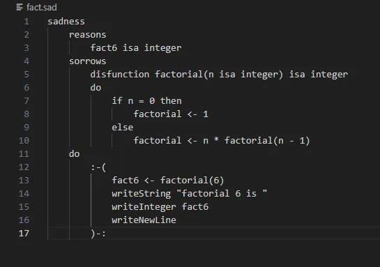

SAD | Custom Programming Language
Programming Language with Compiler | Principles of Programming Final Project
SAD is a custom programming language implemented entirely in Smalltalk and compiling to C. The project explores the core principles of designing a programming language.
Project Overview
SAD is a programming language I built for my Principles of Programming class. It's written entirely in Smalltalk, making it a purely object-oriented compiler.
It's a solid example of systems thinking, programming language design, and object-oriented architecture in practice.
Features:
- Custom syntax and grammar defined using Ohm.
- Parser, interpreter, and code generator for executing SAD programs.
- Fully object-oriented implementation, with nearly every method under 8 lines.
- A pretty printer that formats code with a single click.
- A semantic analyzer for catching errors before they run.
- If statements, variables, functions, procedures, recursion, and loops.
Language Showcase

SAD Code
This is the code that you would write in my custom language.

C code
This is the generated C code from the SAD code.